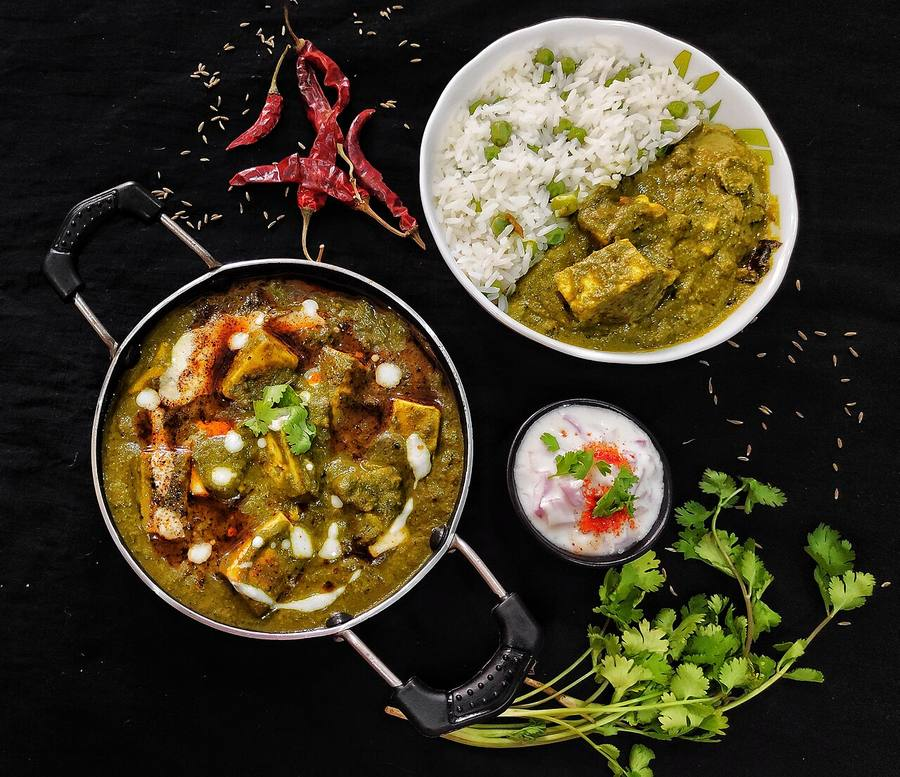

Contains: milk
Checked against the ingredient list for ten allergens: milk, egg, fish, crustaceans, tree nuts, peanuts, sesame, mustard, soy and gluten. Brands vary, so read the label on anything new to you.
Ingredients
Quantities for 4.
- 500g, washed and thick stems removed Spinach
- 300g, cut into 2cm cubes Paneer
- 1 large (150g), finely chopped Onion
- 2 medium (200g), chopped Tomato
- 1.5 inch, grated Ginger
- 5 cloves, minced Garlic
- 2 Green Chilli
- 2 tbsp Gheeor neutral oil
- 1 tsp Cumin Seeds
- 1.5 tsp Coriander Powder
- 1/4 tsp Turmeric
- 1/2 tsp Garam Masala
- 1 tsp, crushed Kasuri Methioptional
- 3 tbsp Creamto finishoptional
- to taste Salt
- 1 cup, plus a bowl of iced water Water
Cookware
stovetop, kadhai, blender
Before you start
- Fill a bowl with iced water before you start. The spinach goes straight from the pot into it and that is what keeps the colour green.
- If the paneer is shop-bought and firm, soak the cubes in hot salted water for 15 minutes and drain; they turn soft again.
- Chop everything before you begin. The whole dish moves quickly once the spinach is blanched.
Method
- Boil a large pan of water, drop in the spinach and green chillies, and blanch for exactly 90 seconds.Any longer and the leaves go olive-drab and taste stewed.
- Lift the spinach straight into the iced water, leave 1 minute, then drain and squeeze out most of the liquid.
- Blend the spinach and chillies to a coarse puree with 2 tbsp water and set aside.
- Heat the ghee in a kadhai and crackle the cumin seeds for 20 seconds.
- Add the onion and fry 8 minutes until soft and light gold at the edges.
- Stir in the ginger and garlic and fry 90 seconds until fragrant.
- Add the tomato, coriander powder, turmeric and 3/4 tsp salt, and cook 8 minutes until the tomato breaks down and oil shows at the edges.
- Pour in the spinach puree with 1/2 cup water and simmer just 5 minutes.Long cooking after the spinach goes in dulls the colour. Five minutes is enough.
- Slide in the paneer cubes, stir gently, and simmer 3 minutes so they warm through and take on the seasoning.
- Crush in the kasuri methi, add the garam masala, and swirl in the cream off the heat.
- Taste for salt and serve hot with roti or jeera rice.
Storage
Keeps 2 days refrigerated. Reheat gently on the stovetop with a splash of water. A microwave makes the paneer rubbery. Do not freeze; the spinach turns grey and the paneer goes grainy.
Nutrition Good estimate
Medium protein: 19 g a serving, 20% of the calories
| Per serving315 g | Per 100 g | |
|---|---|---|
| Calories | 389 kcal | 124 kcal |
| Protein | 19.2 g | 6 g |
| Carbohydrate | 15.7 g | 5 g |
| of which sugars | 5.7 g | 2 g |
| Fibre | 4.9 g | 2 g |
| Fat | 29.4 g | 9 g |
| of which saturated | 16.4 g | 5 g |
| of which unsaturated | 9.3 g | 3 g |
Ingredients added to taste rather than by weight are counted as zero, so the true figure is a little higher than shown. Worked out from the listed quantities; most of the ingredient list could be weighed. Ingredients given to taste rather than by weight are counted as zero, so the real figure is a little higher than this. The + says so. Some ingredients have no exact match in the nutrient database and use the nearest equivalent: garam masala. Estimated from raw ingredients using USDA FoodData Central. Cooking changes are not modelled, and added salt is excluded, so sodium is not given.
Written and checked against sources, not cooked in a test kitchen. Times, yields, allergens and nutrition are worked out rather than measured, so use your own judgement on doneness and on storing. More in About.